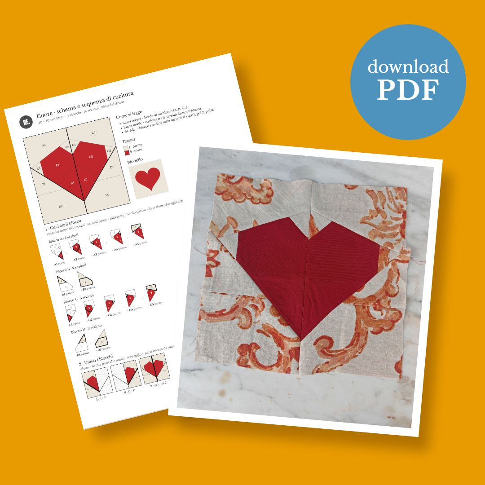
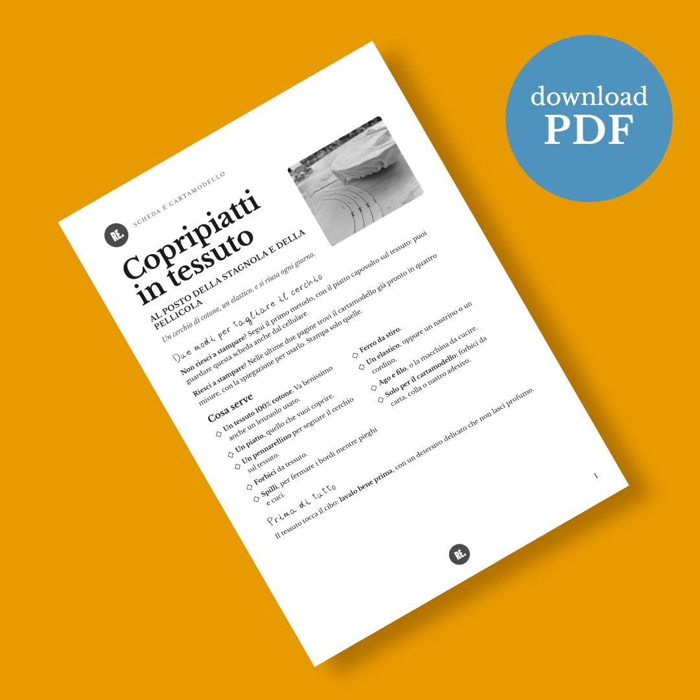

Natale 2026 · idee regalo
Regali di Natale sostenibili, fatti a mano
Borse, bustine e piccole cose che ho creato nel mio laboratorio ai piedi dell'Etna, tra cucito e uncinetto, con tessuti e filati salvati dal macero. Da 6 a 105 €, divise per prezzo.
Scegli per prezzo
Lo shop resta aperto fino al 10 dicembre
di Greta Naselli, Repunto, laboratorio di sartoria rigenerativa. Aggiornato il 15 novembre 2026.
In breve. Qui sotto trovi i pezzi che ho creato a mano, divisi per prezzo: da 6 € per uno scrunchie a 105 € per una borsa foderata. Ogni borsa esiste in un solo esemplare. Spedisco in tutta Italia entro 2 giorni lavorativi, quindi quello che ordini entro il 10 dicembre arriva in tempo per Natale. Per chi cuce ci sono anche le schede da scaricare, a 6 €.
Scegli una pallina: ti porto ai regali di quel prezzo.
Prima di scegliere
Cosa rende un regalo davvero sostenibile?
Un regalo è sostenibile quando per farlo non servono materiali nuovi e quando chi lo riceve lo userà a lungo. Prima di scegliere, io mi faccio tre domande.
1
Di cosa è fatto?
Un oggetto cucito con un tessuto che esisteva già non chiede nuove risorse: né campi, né tinture, né acqua in più.
2
Chi l'ha fatto, e dove?
Un pezzo fatto a mano ha una persona e un luogo dietro, e si può raccontare insieme al regalo.
3
Verrà usato?
Il regalo più sostenibile è quello che non finisce in un cassetto: una borsa per la spesa, una bustina per la borsa, un elastico per i capelli.
Le mie borse in tessuto le cucio con i campionari di tappezzeria: tessuti nuovi e di qualità, con cui le aziende presentano le loro collezioni e che poi dismettono. Le borse all'uncinetto le lavoro con filati di recupero, spesso più fili tenuti insieme in uno solo. Anche il pacco è di recupero: spedisco in un imballo di carta riciclata dai campionari di carta da parati.
sotto i10 €
Regali di Natale sotto i 10 euro
Per i pensieri piccoli: chi ti ospita a cena, le colleghe, il pacchetto per ognuno sotto l'albero. Gli scrunchie sono cuciti con ritagli di tessuto; dei portachiavi a cuscinetto esiste un solo esemplare, con i due lati diversi.
sotto i25 €
Regali sotto i 25 euro
Piccole cose che si usano ogni giorno: un portacarte per le tessere, un porta posate per chi pranza fuori casa al posto delle posate di plastica, una bustina per i trucchi o i cavi, un tondo tessile da appendere all'albero.
sotto i50 €
Regali sotto i 50 euro
Le shopper in tessuto, le bustine in seta e le borse piccole all'uncinetto. Le bustine in seta hanno i due lati diversi: chi la riceve ne sceglie uno e, quando si stanca, la gira.
un regalospeciale
Un regalo importante: le borse più lavorate
Le borse più grandi e con più ore di lavoro dentro: foderate, con la zip, a patchwork di campionari o all'uncinetto. Pezzi da portare tutti i giorni, per anni.
Per chi cuce
Un progetto da regalare
Per chi ama cucire, un regalo diverso è un progetto. Le mie schede sono PDF da scaricare subito, con le foto di ogni passaggio e il modello da stampare a casa. Si possono stampare e regalare insieme a qualche ritaglio di stoffa scelto apposta.
Tutte le schede sono nella pagina Schede per cucire.

6 €Cuore in patchwork su carta
Scheda e modello, PDF da scaricare

6 €Copripiatti in tessuto
Scheda e cartamodello, PDF da scaricare

Ogni pezzo di questa pagina l'ho creato io, uno alla volta, partendo da tessuti e filati che altrimenti sarebbero finiti al macero. Se hai un dubbio su un regalo, una misura o un colore, scrivimi: ti rispondo io.Greta
Domande frequenti
Se ordino adesso, il regalo arriva prima di Natale?
Sì. Spedisco in tutta Italia entro 2 giorni lavorativi dal pagamento e il pacco arriva in 3-4 giorni lavorativi. Lo shop resta aperto fino al 10 dicembre, proprio perché quello che ordini arrivi in tempo.
Posso farlo spedire direttamente alla persona a cui lo regalo?
Sì: nella pagina di pagamento scrivi come indirizzo di spedizione quello della persona a cui lo regali.
Quanto costa la spedizione?
9 € a ordine, qualunque cosa ci sia dentro. Da 60 € in su è gratis.
E se il regalo non piace?
Hai 14 giorni da quando il pacco arriva per restituirlo, senza dover spiegare il perché: mi scrivi, lo rispedisci e ti restituisco quello che hai pagato. Tutto è spiegato nelle condizioni di vendita.
I pezzi sono tutti unici?
Ogni borsa esiste in un solo esemplare: quando è venduta, non torna. Di alcune piccole cose, come gli scrunchie e i porta posate, ci sono più pezzi uguali. Se un pezzo di questa pagina è già stato venduto, lo vedi in grigio.
Fino al 10 dicembre
Un regalo con una storia dentro
Nello shop trovi tutti i pezzi, anche quelli che non sono in questa pagina. Spedizione gratuita da 60 €.
Entra nello shop
La newsletter
Un progetto al mese, con quello che hai in casa
Il primo di ogni mese ti scrivo una lettera dal laboratorio con un progetto di riciclo tessile spiegato passo passo, il video gratis e un codice per avere la scheda del mese a 4 € invece di 6 €. L'iscrizione è gratis, niente pubblicità, si esce quando vuoi.